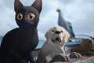
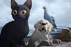

La pelicula
Flow es una pelicula animada echo en el programa de animacion "Blender", llego a ganar premios en este año 2025, la pelicula conciste sobre la vida de un gato negro y lo que vive en un mundo postapocaliptico, cuando vi la pelicula me sorprendio pues no tiene voces como ya estaba acostumbrado pero fue interesante y mas con el video de "Fuera de Foco" un canal de youtube que habla sobre la pelicula dando una reflexion
Ella habla de la pelicula con una reflexion hacia la vida mas halla de como fue echa la pelicula y lo bella que es, como animales como un gato, perro, grulla, capibara, etc tienen que convivir ayudandose entre ellos y a la vez no, asi tambien sobrevivir a un mundo totalmente diferente sin seres humanos, habla sobre la esperanza como el dicho que ella dice "la calma despues de la tormenta". Tambien habla como la desesperanza cuando ya no tenemos eso que nos hace a nosotros mismos, sin aquello que sentiamos necesario para nosotros, habla sobre la resiliencia y como seguir a traves de muchos problemas y tener esperanza en la vida
 
